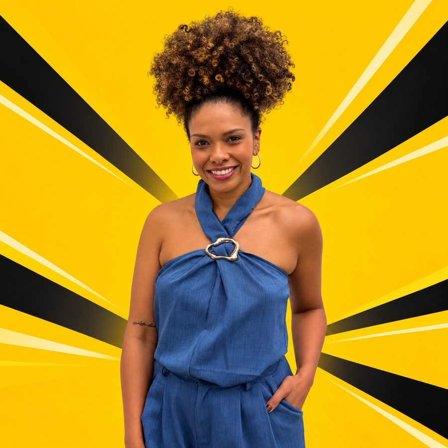

Passe Livre: Programa Tarifa Zero
Projeto de Lei 002/25, que institui o Programa Tarifa Zero em Porto Alegre, e a Frente Parlamentar em Defesa da Tarifa Zero, criada por proposta de Karen em 2024.
Ver o projetoProfessora de Educação Física, mestra em Educação pela UFRGS, cria da zona sul de Porto Alegre e militante do movimento negro. Duas vezes a vereadora mais votada da Capital, agora leva para a Assembleia a luta por transporte gratuito, educação pública e direitos para quem trabalha.

Karen cresceu no Camaquã, na zona sul de Porto Alegre, numa família negra de servidores públicos: o pai era bancário do Banrisul e a mãe, secretária de escola estadual. A família frequentava clubes negros como o Floresta Aurora, onde o pai foi conselheiro, e a Karen cresceu entre a capoeira, o samba e as campanhas do pai na política.
Entrou na UFRGS pelas ações afirmativas, se formou em Educação Física e fez mestrado em Educação na mesma universidade. Trabalhou no IBGE nas pesquisas POF e PNAD, que a levaram a conhecer de perto as desigualdades da cidade e da Região Metropolitana. Cada eleição dela foi feita de panfleto, porta em porta e trabalho de base.
Um movimento que cabia num elevador virou a maior votação da cidade.
A primeira reunião do Coletivo Alicerce foi numa salinha do Sindisprev. Hoje ele é a base territorial do mandato.Na adolescência, treina na Escola de Capoeira Guerreiros, com o Mestre Farol. Ajuda a criar o primeiro encontro de mulheres do grupo, o Menina Mandigueira.
Ingressa em Educação Física pelas ações afirmativas. A convite da irmã, entra no movimento estudantil e chega ao DCE da UFRGS.
Depois da luta pela avaliação das cotas, cria o primeiro coletivo de estudantes cotistas da UFRGS.
Das mobilizações de 2013 nasce o Coletivo Alicerce, que se tornaria a base política e territorial do mandato. A primeira reunião coube numa salinha do Sindisprev.
Formada, é aprovada em concurso para lecionar na rede estadual do Rio Grande do Sul.
Escolhida coletivamente pelo Alicerce, entra no PSOL e disputa a Câmara com campanha de rua e quase nenhum recurso. Fica como primeira suplente.
Faz mais de 16 mil votos e garante novamente a suplência da cadeira conquistada por Fernanda Melchionna.
Toma posse como vereadora na vaga de Fernanda Melchionna, eleita deputada federal, e preside a Procuradoria da Mulher da Câmara.
Integra a primeira Bancada Negra da história da Câmara de Porto Alegre, ao lado de Matheus Gomes, Laura Sito, Bruna Rodrigues e Daiana Santos.
Assume a presidência da Comissão de Urbanização, Transportes e Habitação da Câmara.
Segunda maior votação da cidade, cerca de cinco mil votos a mais do que em 2020.
Começa o mestrado em Educação na UFRGS, que conclui antes da eleição de 2026, conciliando a pesquisa com o mandato.
Amplia a bancada do PSOL na Assembleia Legislativa para três parlamentares, ao lado de Luciana Genro e Matheus Gomes, e ajuda a manter a bancada negra na Casa.
Propostas construídas com movimentos sociais, sindicatos e comunidades durante os mandatos na Câmara de Porto Alegre, e que agora ganham escala estadual.
Projeto de Lei 002/25, que institui o Programa Tarifa Zero em Porto Alegre, e a Frente Parlamentar em Defesa da Tarifa Zero, criada por proposta de Karen em 2024.
Ver o projetoAtuação conjunta com parlamentares negros por uma política que coloque no centro a periferia, os quilombos, as escolas de samba, os clubes negros e a capoeira.
Moção para que famílias com crianças e adolescentes atípicos tenham sala de acolhimento nos hospitais públicos e privados de Porto Alegre.
Professora licenciada da rede estadual, Karen apoiou as greves da categoria e a defesa da escola pública desde o primeiro ano de mandato.
Indicação de edital para artistas de Porto Alegre grafitarem o viaduto, com limpeza e revitalização do local, a pedido de moradores e usuários.
Defesa dos trabalhadores da saúde da família de Porto Alegre contra a extinção do instituto e a precarização do atendimento nos postos.
O transporte é um direito social previsto no artigo 6º da Constituição. O projeto de Karen cria o Programa Tarifa Zero para tornar o ônibus gratuito em todo o sistema, com transparência e controle público.
Mexa nos valores e veja quanto uma família gasta com ônibus por ano.
Fontes: PL 002/25 (Câmara de Porto Alegre) · Brasil de Fato · Sul21
Falas da Karen registradas pela taquigrafia da Câmara de Porto Alegre, entrevistas e reportagens de 2019 a 2026. Escolha um tema no submenu, filtre por tipo e abra a fonte original de cada registro. O arquivo completo da Câmara está em Taquigrafias – Vereadora.
Logo após a eleição, Karen relaciona a queda das candidaturas negras no RS ao recuo das lutas do movimento negro e diz que a bancada negra precisa seguir ligada a clubes negros, terreiros, escolas de samba e quilombos. Para o mandato estadual, aponta tarifa zero com subsídio de município, estado e União, o Museu do Negro, o combate aos feminicídios com auxílio-aluguel para vítimas e o debate sobre a dívida do estado.
Ler entrevistaOs resumos são paráfrases das falas. As frases entre aspas são trechos curtos da taquigrafia ou das reportagens indicadas em cada registro.
Cada intervenção da Karen registrada nos Anais da Câmara Municipal de Porto Alegre, de fevereiro de 2019 a outubro de 2026, com título e síntese do que foi dito. Escolha um tema no submenu, busque por palavra, filtre por ano ou tipo de fala, leia o trecho da taquigrafia e abra o PDF oficial na página da fala.
Carregando o arquivo…
Agenda nos territórios, falas na tribuna, bastidores da transição para a Assembleia e a luta pelo Passe Livre.
Seguir no InstagramMarque @karensantospoa nas suas denúncias e fotos do seu bairro. O mandato acompanha e responde.
Problema no ônibus, na escola ou no posto do seu bairro? Quer levar a Karen para uma atividade na sua cidade? Escreva para a equipe.
O jeito mais rápido é pelo WhatsApp do mandato: (51) 99513-1811
Chamar no WhatsApp